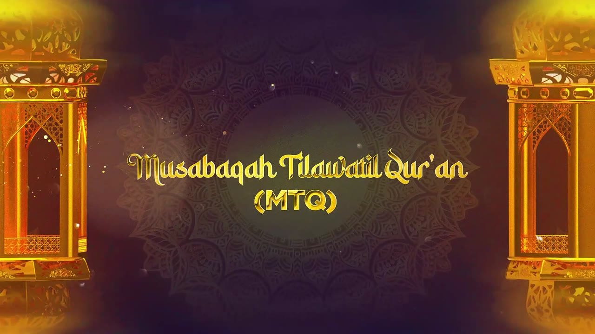

An opening and closing visual identity for MTQ XXXI, using golden ornaments, architectural depth and dimensional titles.
WATCH PREVIEWWATCH ORIGINAL (opens in a new tab)OPEN EVENT COLLECTION (opens in a new tab)MTQ XXXI
VIDEO PREVIEWVISUAL DIRECTION
- Golden light and decorative architectural frames
- Dimensional event titles
- Opening and closing sequences